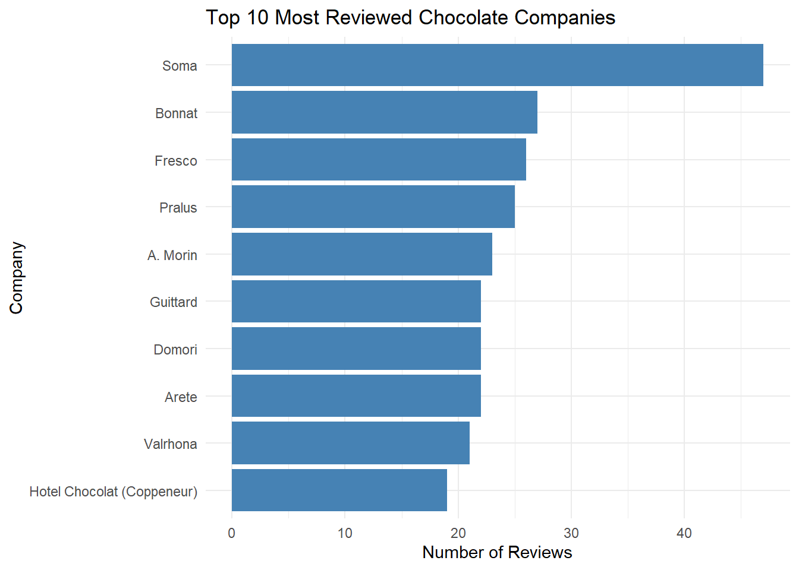
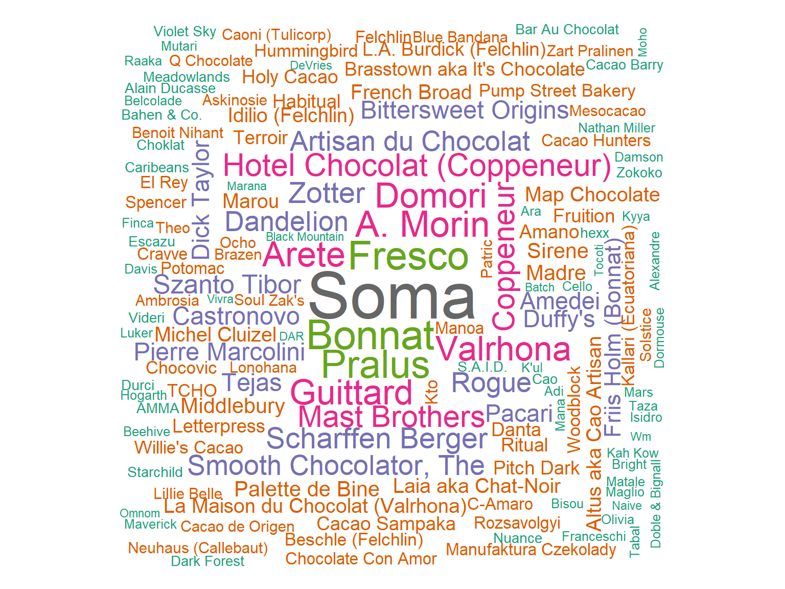
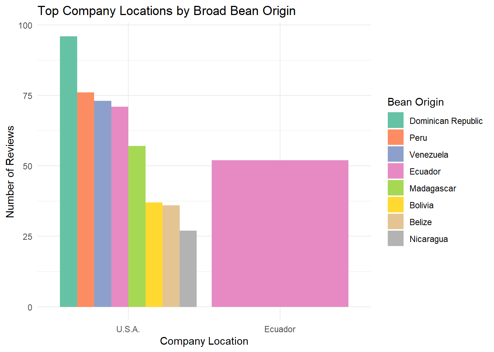
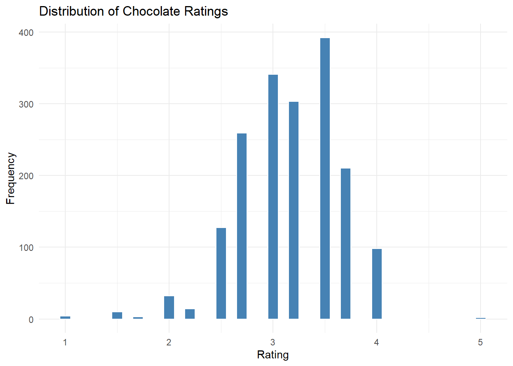
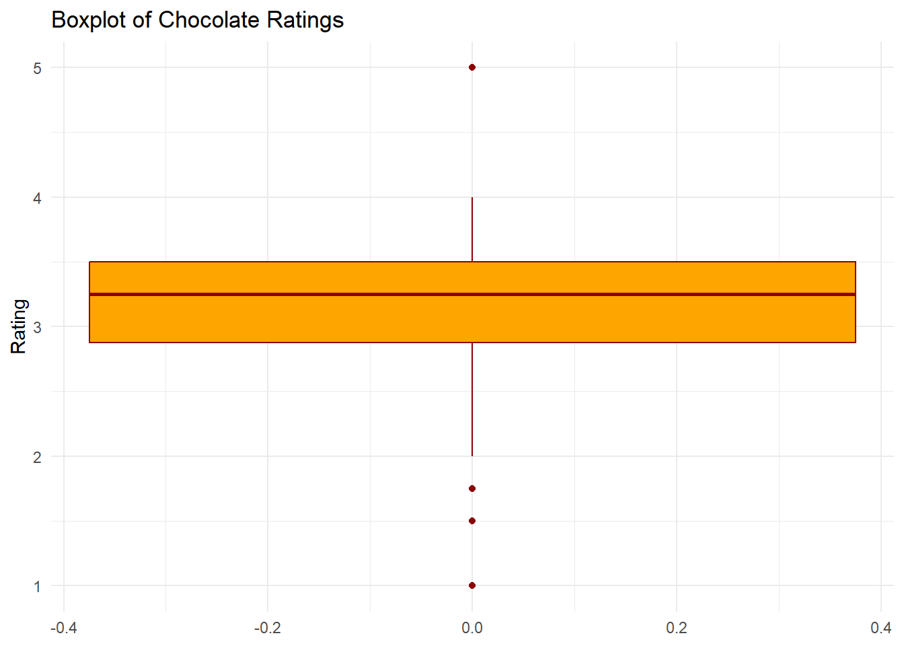
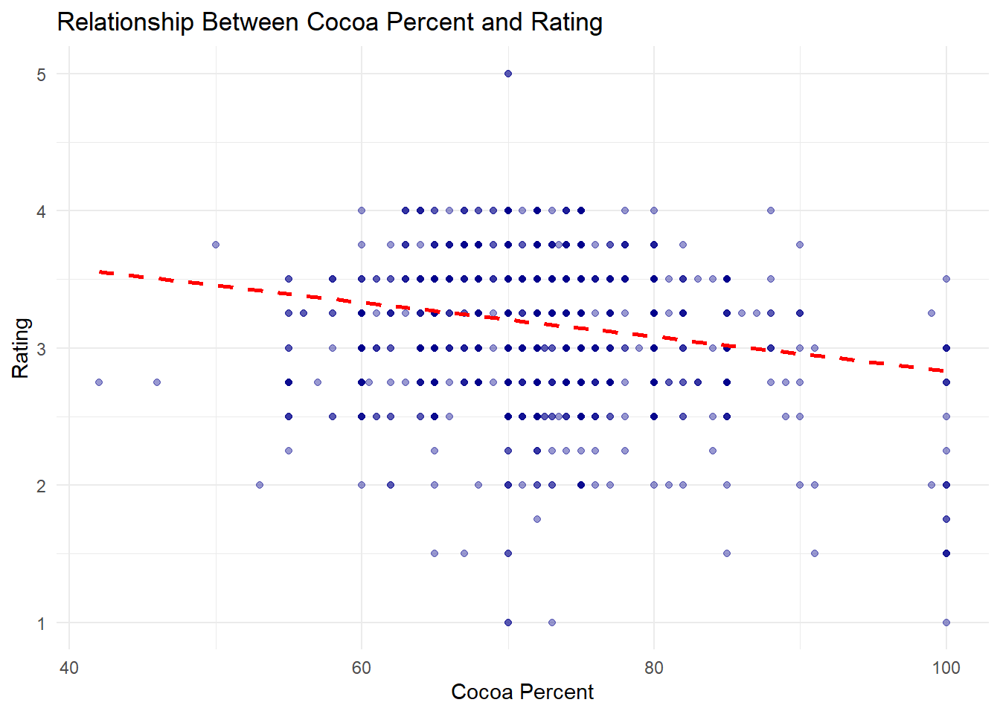
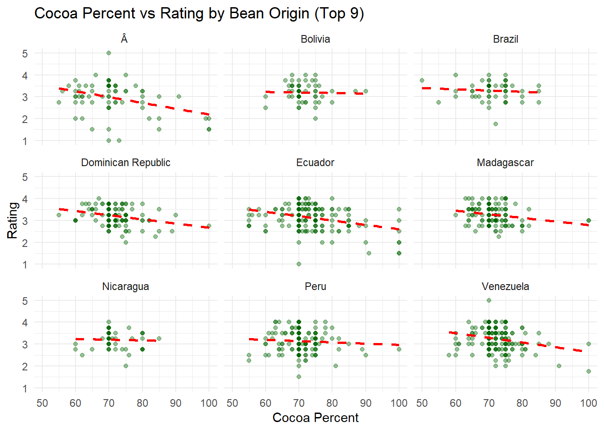
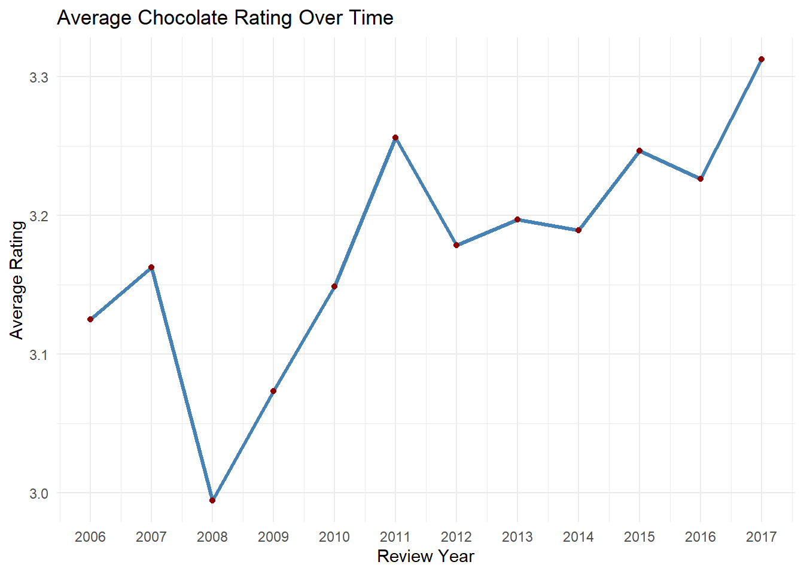
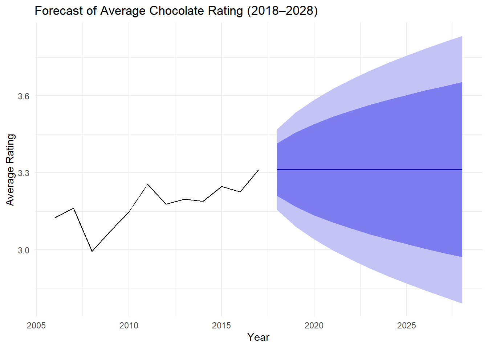

Chocolate Ratings Visual Analysis
Introduction
This report explores chocolate bar ratings using the Flavors of Cacao dataset. Through a series of visualizations, we examine patterns by company, origin, cocoa content, and time. The goal is to uncover insights that can support data-driven decision-making in the chocolate industry.
Part 1: Defining Variables
Categorical Variables
- company
- company_location
- country_of_bean_origin
- broad_bean_origin
- review_date (treated as discrete)
Continuous Variables
- cocoa_percent (numeric)
- rating
Part 2A: One Categorical Variable
Bar Chart: Top 10 Most Reviewed Companies
Interpretation This bar chart displays the top 10 most reviewed chocolate companies in the dataset. Soma stands out as the most frequently reviewed, followed by Bonnat, Fresco, and Pralus. These companies are likely to have greater brand visibility or a strong reputation among chocolate reviewers. This visualization helps identify key players in the market and may indicate which manufacturers have the broadest consumer reach or strongest engagement with the reviewing community.
Word Cloud: Company Review Frequency

Interpretation This word cloud illustrates which chocolate manufacturers appear most frequently in the data set. The larger the company name, the more reviews it received. For example, Soma, Pralus, and Fresco are the most prominently featured, indicating these companies are well-represented and possibly more established or popular among reviewers. This helps identify key players in the gourmet chocolate market.
Part 2B: Two Categorical Variables
Bar Chart: Company Location vs Broad Bean Origin

Interpretation The bar chart shows the top 8 combinations of chocolate company locations and the origins of their cacao beans. U.S.-based companies dominate the top combinations, sourcing beans from a wide variety of regions, including the Dominican Republic, Peru, Venezuela, Ecuador, and Madagascar. Ecuador also appears as both a company location and a bean origin, highlighting its dual role in production and sourcing. This suggests that U.S. companies are major contributors to the diversity of cacao sourcing in the market.
Part 2C: One Continuous Variable – Chocolate Ratings

Interpretation The histogram shows that the majority of chocolate bar ratings fall between 2.75 and 3.75, with a clear peak near 3.5. This suggests that most chocolates are rated moderately well, with few low-rated or exceptionally high-rated products. Ratings below 2 and above 4 are rare, indicating that reviewers tend to stay within a relatively narrow range when evaluating products.

Interpretation The boxplot of chocolate ratings confirms that most ratings fall within a tight interquartile range (approximately 3.0 to 3.6), indicating consistent mid-to-high quality evaluations. The median rating is slightly above 3.25. A few outliers are present at both the low (around 1.0 to 2.0) and high (5.0) ends, suggesting rare extreme opinions—either strongly negative or unusually positive reviews.
Part 2D: Relationship of Continuous Variables
Scatterplot: Cocoa Percent vs. Rating

Interpretation The scatterplot shows a slight negative relationship between cocoa percent and rating, indicating that as cocoa percentage increases, the average rating may slightly decrease. However, the trend is weak and dispersed, suggesting that cocoa content alone is not a strong predictor of rating.
Part 2E: Scatterplot Stratification
Faceted Scatterplot: Cocoa Percent vs Rating by Bean Origin

Interpretation This faceted scatterplot explores the relationship between cocoa content and chocolate rating across the nine most common bean origins. Most origins show a slight negative trend, where higher cocoa percentages are not necessarily associated with higher ratings—contrary to expectations. For example, Ecuador and Venezuela both show declining ratings with increasing cocoa percent. This suggests that factors beyond cocoa content—such as flavor balance or processing techniques—may have a stronger influence on reviewer scores.
2F: Time Series Analysis
Average Rating Over Time

Interpretation:
The line chart shows how average chocolate ratings have changed over time. Ratings appear relatively stable across the years, with only minor fluctuations. This suggests a fairly consistent standard in chocolate quality or reviewer expectations throughout the data set’s time span. Any visible dips or peaks may indicate changing reviewer trends or the introduction of new companies/products.
Forecast of Average Chocoalte Ratings (2018-2028)

Interpretation The forecast chart displays projected average chocolate ratings from 2018 to 2028, based on historical data spanning 2006 to 2017. The black line represents actual yearly averages, while the solid blue line continues the trend into the forecast period. The shaded regions around the forecast represent the model’s confidence intervals—darker blue for 80% and lighter blue for 95%.
The forecast indicates a modest upward trend in average ratings, suggesting that chocolate quality or consumer perceptions may improve slightly over time. The growing width of the confidence bands reflects increasing uncertainty as the forecast extends further from the observed data. Overall, the model expects chocolate ratings to remain relatively stable, with values centered around 3.3 over the next decade.
2G: Map — Chocolate Ratings by Company Location
Interpretation This map visualizes the average chocolate ratings by company location across the globe. Countries such as the United States, France, and the United Kingdom are notable for both the number of companies represented and higher average ratings. Clusters in Europe and the Americas indicate regions with a strong presence in premium chocolate production. The global spread also highlights emerging contributors from regions like South America, Asia, and Oceania. This distribution provides insight into geographic trends in chocolate quality perception and consumer preference.